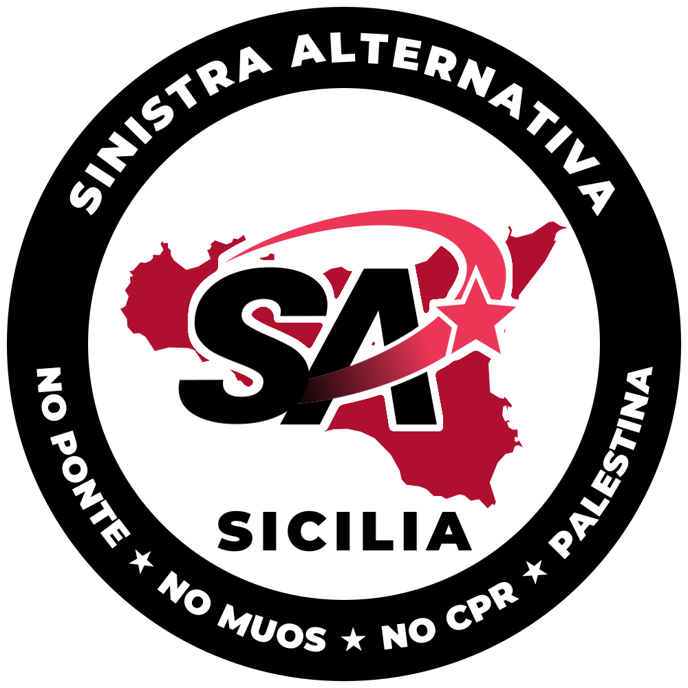

Sinistra per l'AlternativaCoordinamento regionale siciliano · Elezioni regionali 2027
Programma
Bozza in discussione nei tavoli
28 novembre 2026
Ripudiare la guerra
Chiusura progressiva delle basi USA e NATO, revoca delle autorizzazioni al MUOS di Niscemi, Sicilia zona di pace, neutrale e denuclearizzata.
Perché
In Sicilia la guerra non è un fatto lontano. L’isola ospita basi e impianti che servono a operazioni decise altrove: Sigonella, il MUOS di Niscemi, Trapani-Birgi, Augusta. Le servitù militari sottraggono territorio, limitano l’uso del suolo e del mare, e pesano su comuni che non hanno voce nelle decisioni che li riguardano.
Chi vive accanto a un impianto militare paga due volte: in territorio sottratto e in incertezza sulla propria salute, perché il monitoraggio ambientale e sanitario è scarso e non indipendente.
E ogni euro speso in riarmo è un euro che non va negli ospedali e nelle scuole di un’isola che è in piano di rientro sanitario. Non è un capitolo separato del bilancio pubblico: è una scelta su dove mettere le risorse.
Cosa può fare la Regione, subito
- Revocare le autorizzazioni agli impianti militari nelle aree protette, a partire dal MUOS di Niscemi. Le aree protette sono materia su cui la Regione ha competenza propria, e l’autorizzazione è un atto che chi lo ha emesso può riesaminare.
- Nessuna nuova concessione di demanio civile regionale per usi bellici, e moratoria su quelle in scadenza.
- Stop alle convenzioni fra università pubbliche siciliane e industria degli armamenti, usando le risorse che la Regione mette negli atenei come leva.
- Monitoraggio ambientale e sanitario pubblico e indipendente nelle aree delle basi, con dati pubblicati e non filtrati da chi gestisce gli impianti.
- Nessun fondo regionale — contributi, bandi, agevolazioni — ad attività legate agli armamenti.
- Piano di riconversione civile per chi oggi lavora nell’indotto militare: nessun posto di lavoro va chiuso senza un’alternativa, e la riconversione si progetta con i lavoratori, non sopra di loro.
Cosa va strappato allo Stato
Le basi, le servitù e gli accordi internazionali non sono competenza regionale. Qui l’Assemblea regionale può formulare un progetto di legge e presentarlo alle Camere: è un potere di proposta, e il Parlamento non è tenuto ad approvarlo.
- Chiusura progressiva delle basi USA e NATO in Sicilia e fine delle servitù militari.
- Declassificazione degli accordi che regolano l’uso del territorio siciliano a fini bellici: chi ci vive ha diritto di sapere che cosa è stato firmato.
- Sicilia zona di pace, neutrale e denuclearizzata.
Perché una proposta di legge non resti una firma su un foglio, va sostenuta da un referendum consultivo regionale e da una mobilitazione che la tenga in piedi.
L’obiezione
Ci diranno che le basi portano lavoro. Ne portano, ed è un lavoro vero di cui vivono migliaia di famiglie: per questo la riconversione viene prima della chiusura, e non dopo. Chi propone di smantellare senza dire dove vanno quei lavoratori non sta facendo una proposta, sta facendo uno slogan.
Ci diranno che la Regione non c’entra. Sulle basi è vero, e lo scriviamo. Ma le autorizzazioni nelle aree protette, il demanio regionale, i fondi della Regione e le convenzioni degli atenei che la Regione finanzia non sono materia dello Stato: sono materia nostra, e oggi nessuno le usa.
Come ci arriviamo
Su questo pilastro lavora un tavolo aperto a comitati, collettivi, sindacati e singole persone. Le proposte qui sopra sono una bozza: si discutono al tavolo e si votano in assemblea.
Difendere il lavoro
Clausola sociale in ogni appalto regionale, 12 euro netti l’ora, stop ai subappalti a cascata, lotta al caporalato e al lavoro nero.
Perché
In Sicilia si lavora e si resta poveri. Negli appalti pubblici il massimo ribasso scarica il costo sull’ultimo anello della catena, che è sempre chi lavora: i subappalti a cascata servono a questo, a far sparire la responsabilità mentre la paga scende. Nelle campagne il caporalato non è un’eccezione, è un sistema di reclutamento. Negli enti e nelle partecipate il precariato dura da decenni e si chiama «storico» come se fosse un fatto di natura.
A ogni cambio di appalto chi lavora rischia il posto pur restando lo stesso servizio nello stesso luogo. E chi non accetta queste condizioni ha una sola alternativa: partire. I 96.328 giovani andati via fra il 2019 e il 2026 non se ne sono andati per gusto di viaggiare.
Cosa può fare la Regione, subito
- Clausola sociale in tutti gli appalti di Regione, aziende sanitarie e partecipate: chi subentra assume chi c’era, alle stesse condizioni.
- Una soglia retributiva minima nei bandi, con l’obiettivo di 12 euro netti l’ora: ammessi solo i contratti collettivi nazionali che la rispettano. La Regione non fissa i salari — non può — ma decide a quali condizioni si lavora per lei.
- Stop ai subappalti a cascata: chi vince l’appalto risponde del lavoro, e non lo rivende a pezzi.
- Salvaguardia occupazionale nei cambi appalto, scritta nel bando e non lasciata alla trattativa.
- Stabilizzazione del precariato storico negli enti regionali e nelle partecipate.
- Più ispettori e controlli veri sui cantieri e nelle campagne.
- Revoca di contributi e accreditamenti regionali alle imprese condannate in via definitiva per sicurezza sul lavoro o caporalato, con pubblicazione delle revoche.
- La Regione dentro le vertenze aperte, con vincoli espliciti per chi ha preso denaro pubblico: chi è stato aiutato risponde dei posti di lavoro.
Cosa va strappato allo Stato
Il diritto del lavoro è materia statale. Qui l’Assemblea regionale può formulare un progetto di legge e presentarlo alle Camere: è un potere di proposta, e il Parlamento non è tenuto ad approvarlo.
- Salario minimo legale nazionale.
- Abrogazione del Jobs Act e della liberalizzazione dei contratti a termine.
L’obiezione
Ci diranno che una Regione non può fissare i salari. È vero, e infatti non lo scriviamo. La Regione non fissa la paga di nessuno: stabilisce le condizioni per accedere ai propri appalti, che è una cosa diversa e che può fare.
Ci diranno che è incostituzionale. La Puglia ha fissato per legge nove euro l’ora di paga tabellare negli appalti regionali; il governo ha fatto ricorso e la Corte costituzionale, con la sentenza 188 del 2025, lo ha dichiarato inammissibile senza decidere nel merito. Significa che la strada è aperta, non che è garantita: lo diciamo come sta.
Ci diranno che così le imprese se ne vanno. Chi pulisce un ospedale a Palermo, raccoglie nel Ragusano o guida un autobus a Catania lavora qui e non può delocalizzare. Se ne va l’impresa che campa sul ribasso, non il servizio.
Come ci arriviamo
Su questo pilastro lavora un tavolo aperto a comitati, collettivi, sindacati e singole persone. Le proposte qui sopra sono una bozza: si discutono al tavolo e si votano in assemblea.
Difendere la salute
Sanità pubblica e territoriale: assunzioni stabili, ospedali e pronto soccorso delle aree interne riaperti, liste d’attesa abbattute.
Perché
La Sicilia è in piano di rientro sanitario: la Regione può assumere solo entro i tetti di spesa fissati dallo Stato. È il vincolo dentro cui si muove tutto quello che segue, e lo diciamo prima di ogni promessa.
Dentro quel vincolo, però, la situazione non è un destino. Al 31 dicembre 2025 nei pronto soccorso siciliani c’erano 551 medici su 929 posti previsti: mancavano quattro medici su dieci. I turni scoperti si comprano da cooperative e gettonisti, a un costo per ora più alto di quello di un medico assunto. Nelle aree interne i pronto soccorso chiudono e il primo ospedale è a un’ora di strada.
Le liste d’attesa si allungano, e a quel punto chi può pagare va dal privato — spesso convenzionato, cioè pagato di nuovo con denaro pubblico. Chi non può, rinuncia a curarsi. Non è mancanza di risorse: è una scelta su dove vanno.
Cosa può fare la Regione, subito
- Assumere stabilmente fino all’ultimo posto consentito dai tetti: oggi non è così.
- Sostituire progressivamente cooperative e gettonisti con personale assunto, a parità di spesa o con un risparmio.
- Stop all’allargamento degli acquisti dal privato accreditato: ogni prestazione in più comprata fuori è una che il pubblico smette di saper fare.
- Riaprire i pronto soccorso delle aree interne man mano che gli organici lo consentono, con il trasporto sanitario garantito.
- Pubblicare ogni mese, azienda per azienda, i tempi d’attesa e le prestazioni comprate dal privato. Costa quasi nulla, si può fare domani, e cambia il rapporto di forza: oggi quei dati non sono leggibili da chi aspetta.
- Internalizzare i servizi appaltati fuori: pulizie, trasporto, assistenza.
- Esenzione progressiva dal ticket con risorse regionali, a partire dalle fasce più basse.
L’obiettivo di lungo periodo è sei posti letto pubblici ogni mille abitanti.
Cosa va strappato allo Stato
- Uscita dal piano di rientro: finché resta, ogni assunzione è una deroga da chiedere.
- Superamento del modello aziendale in sanità.
- Abolizione dei ticket.
L’obiezione
Ci diranno che non ci sono i soldi. In parte è vero, ed è il piano di rientro: lo scriviamo in apertura invece di nasconderlo. Ma i posti previsti e non coperti esistono già nei tetti, e la spesa per gettonisti e per gli acquisti dal privato è spesa pubblica anche quella. Non chiediamo di spendere di più: chiediamo di smettere di spendere peggio.
Ci diranno che gli ospedali piccoli non sono sicuri. Un pronto soccorso di area interna non deve fare tutto: deve stabilizzare e trasportare. Senza, la sicurezza non aumenta — si sposta solo il rischio sull’ambulanza.
Come ci arriviamo
Su questo pilastro lavora un tavolo aperto a comitati, collettivi, sindacati e singole persone. Le proposte qui sopra sono una bozza: si discutono al tavolo e si votano in assemblea.
Tenere pubblica l’acqua
Gestione dell’acqua interamente pubblica, reti e invasi riparati. No al Ponte: quei 13,5 miliardi a ferrovie, strade e territorio.
Perché
In Sicilia l’acqua manca mentre scorre via. Le reti perdono, gli invasi sono interriti e mai completati, e la gestione è affidata a soggetti privati che hanno un interesse opposto a quello di chi apre il rubinetto: il profitto sta nella tariffa, non nella rete riparata.
Intorno all’acqua c’è tutto il resto: i rifiuti trattati come affare invece che come servizio, il suolo agricolo che si consuma, le città che si svuotano di abitanti e si riempiono di affitti brevi, le coste che reggono un crocierismo senza limiti.
E c’è il Ponte. Tredici miliardi e mezzo restano stanziati per un’opera senza cantiere, mentre al 30 giugno 2026 oltre l’ottanta per cento della rete ferroviaria siciliana è a binario unico: 1.106 chilometri su 1.370. Non è un dettaglio tecnico: è la scelta di dove va il denaro pubblico.
Cosa può fare la Regione, subito
- Decadenza delle concessioni idriche ai privati e gestione pubblica senza scopo di lucro, partecipata dagli utenti.
- Piano per reti e invasi: riparare quello che perde prima di annunciare opere nuove.
- Stop ai maxi-inceneritori e piano rifiuti pubblico fondato su raccolta, riuso e impianti di prossimità.
- Consumo di suolo agricolo a saldo zero: chi costruisce su terreno agricolo ne restituisce altrettanto.
- Disciplina degli affitti brevi nei centri storici, dove stanno espellendo chi ci abita.
- Crocierismo con tetti di capacità e oneri ambientali a carico di chi porta le navi, non delle città.
- Sul Ponte: votare contro in ogni sede, non mettere un euro del bilancio regionale, e chiedere al governo nazionale che gli 1,3 miliardi rivendicati come contributo della Regione tornino a opere in Sicilia.
Cosa va strappato allo Stato
La Regione non può fermare il Ponte, e lo scriviamo chiaro: l’approvazione del CIPESS sostituisce intese e pareri regionali, e le grandi opere di interesse nazionale sono fuori dalla competenza regionale. Quello che l’Assemblea regionale può fare è presentare al Parlamento una proposta di legge:
- Revoca della concessione.
- Vincolo dei 13,5 miliardi a doppio binario ed elettrificazione delle linee interne, sicurezza idrogeologica, viabilità ordinaria.
Una proposta di legge regionale al Parlamento non si approva da sola: va sostenuta da una mobilitazione che la tenga in piedi.
L’obiezione
Ci diranno che il Ponte porta lavoro. Porta cantieri per alcuni anni in due punti dello Stretto. Gli stessi miliardi su rete ferroviaria, dissesto e strade ordinarie portano lavoro in ogni provincia, e lasciano dietro di sé qualcosa che si usa ogni giorno.
Ci diranno che una cosa non esclude l’altra. Sulla carta no. Nei fatti i soldi vincolati al Ponte non si spendono altrove, e il binario unico è il dato di oggi.
Ci diranno che il pubblico ha già fallito con l’acqua. Ha fallito una gestione pubblica senza controllo e senza investimenti, che è l’anticamera usata per giustificare la privatizzazione. La risposta non è restituire l’acqua a chi guadagna sulla tariffa: è una gestione pubblica con i conti aperti e gli utenti dentro.
Come ci arriviamo
Su questo pilastro lavora un tavolo aperto a comitati, collettivi, sindacati e singole persone. Le proposte qui sopra sono una bozza: si discutono al tavolo e si votano in assemblea.
Decidere sul proprio corpo
Consultori pubblici e laici, interruzione di gravidanza garantita in ogni presidio, centri antiviolenza finanziati.
Perché
Un diritto che esiste sulla carta e non si può esercitare non è un diritto. In Sicilia l’interruzione volontaria di gravidanza è legge dello Stato da quasi mezzo secolo, ma in molti ospedali pubblici non si trova chi la esegua: l’obiezione di coscienza, nata come tutela del singolo medico, è diventata l’organizzazione ordinaria del reparto.
I consultori pubblici sono pochi e sguarniti, e dove mancano il loro posto lo prendono soggetti privati che fanno altro: consulenza orientata, non salute. I centri antiviolenza vivono di bandi che arrivano tardi e durano poco, mentre il lavoro che fanno è continuo.
Chi ha i soldi risolve: va in un’altra regione, paga il privato. Chi non li ha, no. Qui la diseguaglianza non è un effetto collaterale: è il meccanismo.
Cosa può fare la Regione, subito
- Azzerare l’impatto dell’obiezione negli ospedali pubblici: l’obiezione resta un diritto del singolo, ma l’azienda sanitaria deve garantire comunque la prestazione, organizzando il personale perché il servizio ci sia.
- Interruzione di gravidanza gratuita e tempestiva in ogni presidio, con tempi pubblicati e verificabili.
- Un consultorio pubblico e laico ogni ventimila abitanti, con personale assunto.
- Contraccezione gratuita.
- Carriere alias nelle scuole, nelle università e negli enti regionali.
- Centri antiviolenza finanziati in modo stabile, non a bando annuale: chi accoglie una donna non può sapere a giugno se a settembre esisterà ancora.
Cosa va strappato allo Stato
- Riforma della legge 194 che renda effettivo l’accesso e superi l’obiezione come regola di reparto.
- Matrimonio egualitario.
- Norme antidiscriminazione fondate su orientamento sessuale e identità di genere.
L’obiezione
Ci diranno che l’obiezione di coscienza è un diritto. Lo è, e non lo tocchiamo: resta del singolo medico. Non è un diritto dell’ospedale. Se in un reparto obiettano tutti, il problema non è la coscienza di nessuno: è come è stato costruito l’organico.
Ci diranno che sono temi divisivi, da rinviare. Rinviare ha un costo preciso e lo paga sempre la stessa parte: chi non può prendere un treno.
Come ci arriviamo
Su questo pilastro lavora un tavolo aperto a comitati, collettivi, sindacati e singole persone. Le proposte qui sopra sono una bozza: si discutono al tavolo e si votano in assemblea.
Unire il Mediterraneo
Chiusura dei CPR, accoglienza pubblica e diffusa, case popolari da immobili sfitti e beni confiscati alla mafia.
Perché
La Sicilia è il confine dove l’Europa decide chi può entrare e chi no, e dove si vedono le conseguenze di quella decisione: naufragi, centri di detenzione amministrativa, persone trattenute per mesi senza aver commesso alcun reato.
Nello stesso tempo l’isola ha un problema di case che riguarda tutti. Si sfratta per morosità incolpevole, cioè perché uno ha perso il lavoro, mentre migliaia di alloggi restano sfitti e beni confiscati alla mafia si degradano per anni in attesa di una destinazione.
Sono la stessa questione: chi non ha diritto a un tetto — perché straniero, perché povero, perché entrambe le cose — è il più ricattabile sul lavoro. L’accoglienza e la casa non sono due capitoli, sono uno.
Cosa può fare la Regione, subito
- Nessun terreno, immobile o fondo regionale ai centri di detenzione amministrativa: la Regione non è obbligata a mettere a disposizione quello che ha.
- Accoglienza pubblica e diffusa in piccoli nuclei, gestita dagli enti locali e non dai grandi centri: costa meno, funziona meglio, non produce ghetti.
- Sostegno ai Comuni perché l’iscrizione anagrafica non sia negata a chi ne ha diritto. L’anagrafe è una funzione statale esercitata dai Comuni: la Regione non può deciderne le regole, può affiancare i Comuni che le applicano.
- Censimento degli immobili sfitti e dei beni confiscati da destinare a edilizia popolare e usi sociali, con i tempi di assegnazione pubblicati.
- Blocco degli sfratti per morosità incolpevole e fondo regionale per chi è sotto sfratto perché ha perso il reddito.
Cosa va strappato allo Stato
- Abrogazione della legislazione securitaria e della legge sull’immigrazione che lega il permesso di soggiorno al contratto di lavoro.
- Chiusura dei centri per il rimpatrio.
- Ius soli e ius scholae.
L’obiezione
Ci diranno «prima gli italiani». Gli alloggi sfitti, i beni confiscati e il blocco degli sfratti per chi ha perso il lavoro non hanno nazionalità: riguardano chi in Sicilia non arriva a pagare l’affitto, che è la maggioranza di chi chiede casa. Mettere i poveri gli uni contro gli altri è esattamente il modo per non dare casa a nessuno.
Ci diranno che l’immigrazione è materia dello Stato. Lo è, e lo scriviamo. Ma i terreni, gli immobili e i fondi regionali sono della Regione, e oggi nessuno si chiede a che cosa servano.
Come ci arriviamo
Su questo pilastro lavora un tavolo aperto a comitati, collettivi, sindacati e singole persone. Le proposte qui sopra sono una bozza: si discutono al tavolo e si votano in assemblea.
Proteggere il territorio
Bonifica dei cinque poli industriali inquinati a spese di chi ha inquinato. Scuola pubblica gratuita, no all’autonomia differenziata.
Perché
In Sicilia ci sono cinque siti di interesse nazionale da bonificare: Priolo-Augusta-Melilli, Gela, Milazzo, la Valle del Mela, Biancavilla. Aspettano da decenni. Nel frattempo gli impianti che hanno inquinato in molti casi sono ancora in attività, e chi abita lì continua a respirare.
La stessa logica si vede nella scuola. Si chiudono i plessi nelle aree interne e nelle isole minori perché «i numeri non tengono», e intanto fondi pubblici regionali vanno alle scuole private. Gli edifici scolastici non hanno un censimento pubblico leggibile. Nei quartieri dove la dispersione è più alta manca proprio la cosa che la ridurrebbe: il tempo pieno.
Bonifiche e scuola sembrano due temi distanti. Sono lo stesso: in entrambi i casi il costo è stato scaricato su chi vive qui, e il beneficio è andato altrove.
Cosa può fare la Regione, subito
- Bonifica pubblica dei cinque siti di interesse nazionale a carico di chi ha inquinato, con gli oneri messi come condizione per ogni autorizzazione e per ogni contributo regionale.
- Stop ai fondi regionali alle scuole private: le risorse pubbliche alla scuola pubblica.
- Censimento pubblico degli edifici scolastici e piano di edilizia scolastica che parta dai più insicuri, con i dati consultabili.
- Gratuità di libri, mense e trasporti per tutti nella scuola dell’obbligo.
- Nessuna chiusura di plessi nelle aree interne e nelle isole minori.
- Tempo pieno nei quartieri a più alta dispersione scolastica.
- Stop ai PCTO, e diritto allo studio universitario finanziato fino a coprire tutti gli idonei.
Cosa va strappato allo Stato
- Nazionalizzazione delle infrastrutture energetiche strategiche.
- Stop all’autonomia differenziata, che su scuola e sanità allargherebbe il divario invece di chiuderlo.
- Applicazione piena dell’articolo 37 dello Statuto, che assegna alla Regione l’imposta sulla quota di reddito prodotta dagli stabilimenti siciliani di imprese con sede fuori dall’isola.
- Piano straordinario contro gli svantaggi dell’insularità: la Costituzione, all’articolo 119, dice che la Repubblica promuove le misure necessarie a rimuoverli.
L’obiezione
Ci diranno che le bonifiche costano troppo. Costano, e il punto è chi paga. Oggi il costo è già pagato, in salute, da chi abita accanto ai poli industriali; in denaro pubblico, quando interviene lo Stato. Metterlo a carico di chi ha inquinato non è una punizione: è la regola che vale in ogni altro settore.
Ci diranno che senza quegli impianti si perdono posti di lavoro. Chi lavora lì non va lasciato solo: la bonifica è essa stessa lavoro, per anni, e la riconversione si progetta con chi ci lavora. Ma un posto di lavoro che si paga con la salute dei figli non è una scelta libera: è un ricatto.
Come ci arriviamo
Su questo pilastro lavora un tavolo aperto a comitati, collettivi, sindacati e singole persone. Le proposte qui sopra sono una bozza: si discutono al tavolo e si votano in assemblea.